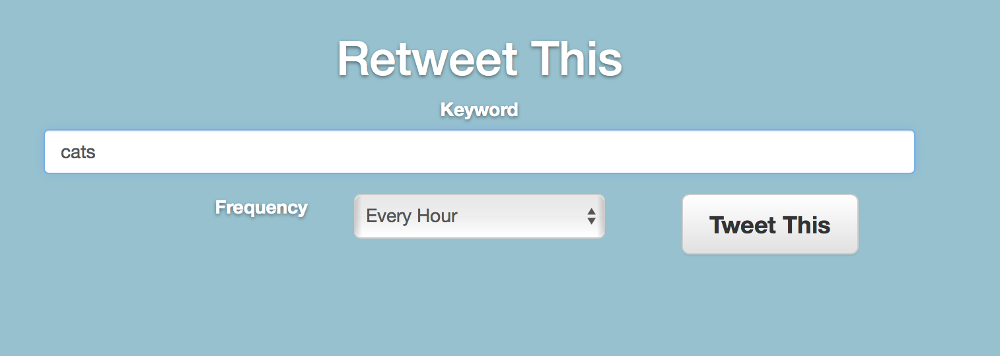

Rapidfire Retweets to Gain Twitter Followers
Click Sign-in/Register to allow our service access to your account.
Once signed in you will be navigated to our Retweet This page.
You're then ready for Step 2.
Input the keyword you would like Woodpecker to retweet.
Maybe something like 'cats' for example.
You can choose to have Woodpecker tweet once every hour, every day, or every week.
Once you've chosen a keyword hit the Tweet This button to let Woodpecker get to work.
Woodpecker will now find the top tweet containing your keyword.
Then, based on the frequency specified, it will retweet that tweet as often as you like.
The only thing left for you to do is go out and enjoy the sun.
Something here